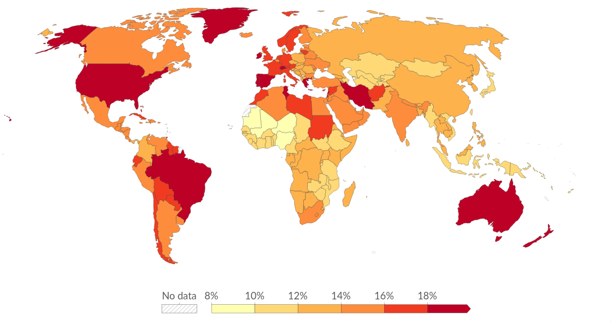

Sanaly Qadam
Сіз жалғыз емессіз
Бұл жоба өздерін жоғалтқан, мотивациясы жоқ, жалғыздық сезінетін адамдарға арналған.
Көп жағдайда адамдарға үлкен өзгеріс емес, тек кішкентай алғашқы қадам жетіспейді. Бұл жүйе сол алғашқы қадамды жасауға көмектеседі.
Психикалық денсаулық мәселелері
Қазіргі қоғамда көптеген адамдар стресс, жалғыздық, алаңдаушылық және ішкі бос сезіммен күреседі.
Ең үлкен мәселе — адамдардың көбі көмек сұрамайды немесе өз мәселесін түсінбейді.

8 адамның 1-і
психикалық қиындықтарға тап болады (ДДҰ мәліметі)
70%
адамдар қажетті психологиялық көмекті алмайды
Жалғыздық
қазіргі заманның ең үлкен әлеуметтік мәселелерінің бірі
Бұл жоба қалай көмектеседі
Бұл жүйе күрделі кеңестер бермейді. Оның орнына қарапайым, нақты және орындалатын тапсырмалар ұсынады.
Әр тапсырма адамның күнделікті өміріне кішкентай өзгеріс енгізіп, сенімділік пен белсенділікті біртіндеп арттырады.
Күнделікті тапсырмалар
Өмірде әрекет етуге арналған шағын қадамдар
ЖИ сұхбаты
Сотсыз және қауіпсіз сөйлесу ортасы
Өзін тану
Қызығушылық пен өмірлік бағытты анықтау
Неліктен бұл маңызды
Көп адамдарға үлкен өзгеріс емес, тек тұрақты шағын әрекеттер қажет. Бұл жоба сол принципке негізделген.
Ол адамның ішкі күйін жақсартуға, жалғыздық сезімін азайтуға және өмірге деген қызығушылықты қайта оятуға көмектеседі.
- ✔ Әлеуметтік байланыс сезімін күшейтеді
- ✔ Өмірге мотивация береді
- ✔ Күнделікті әрекетке итермелейді
- ✔ Өзін түсінуге көмектеседі
Бірінші қадамды жасаңыз
Өмірді бірден өзгерту қажет емес. Тек бірінші қадам жеткілікті.
Тапсырманы алуБұл жоба кәсіби медициналық көмек емес, бірақ қолдау және даму құралы болып табылады.